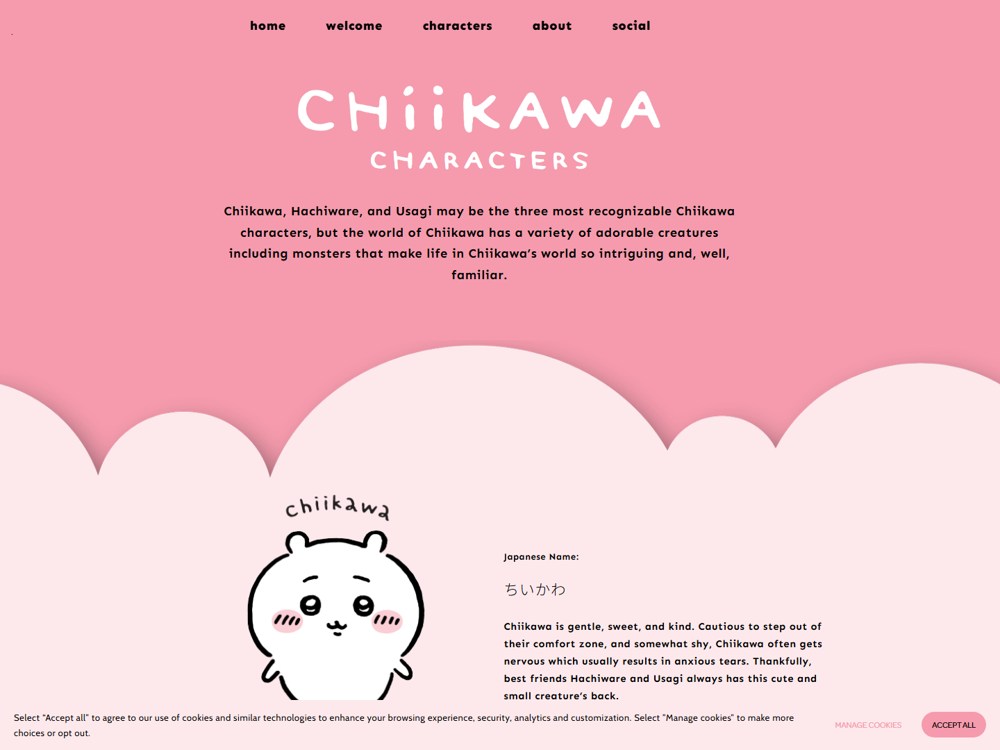
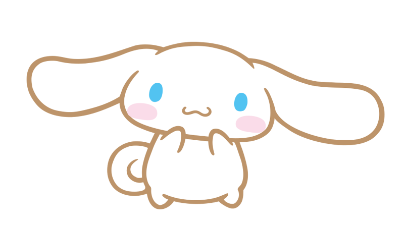
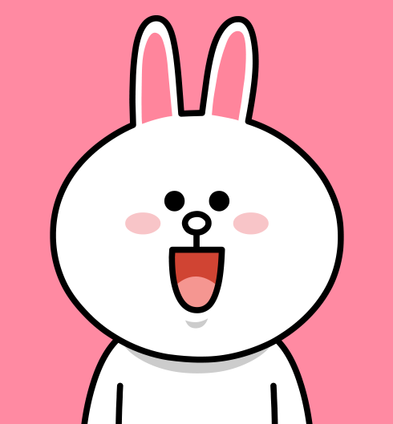
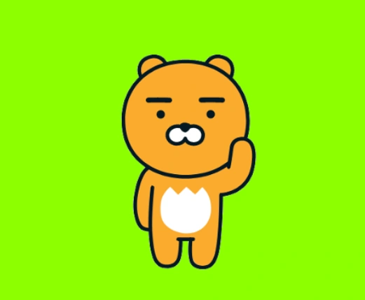
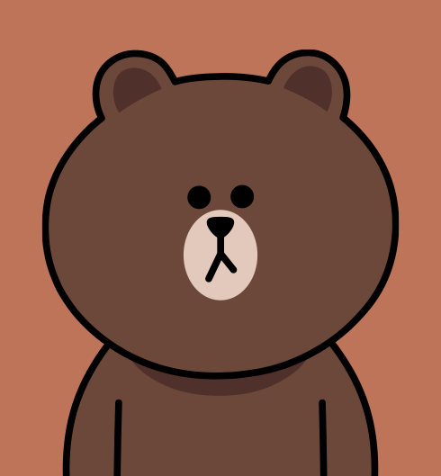
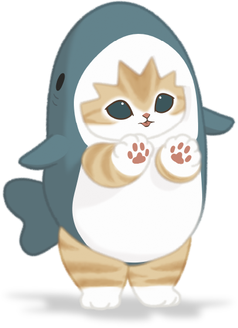

参考图板 · 顶级可爱角色系统
全部来自官方/官方社区渠道(Chiikawa 官网、LINE、Kakao、Sanrio、Mofusand 动画官网、Duolingo 官方)。按美学系统分车道,每格标注可测量特征。选 1-2 条车道作为全家美学锚点。
A · 极简淡线(Chiikawa / Cinnamoroll)
白/浅色体 + 细黑描边 + 小五官 + 腮红线 | 渐变:无 | 用色:≤4 | 最耐看,周边应用最广

Chiikawa
类熊生物(官方截图)
描边:粗黑,头部断开式 · 眼:大圆+高光
腮红:三道短线 · 手:两笔小爪
腮红:三道短线 · 手:两笔小爪

Cinnamoroll
狗(Sanrio)
描边:细棕 · 眼:小豆,间距宽
腮红:椭圆浅粉 · 嘴:一笔小弧线
腮红:椭圆浅粉 · 嘴:一笔小弧线
B · 粗描边贴纸(Cony / Ryan)
粗黑描边 + 平涂 + 表情张力 | 渐变:无 | 用色:≤5 | 小尺寸最扛,表情包文化母体

Cony
兔(LINE Friends)
描边:粗黑 · 耳:粉内耳高对比
嘴:张嘴笑+舌头 · 腮红:圆粉斑
嘴:张嘴笑+舌头 · 腮红:圆粉斑

Ryan
无鬃狮(像熊,Kakao)
描边:粗黑 · 表情:无表情=性格
嘴套:白色大块 · 眉:短粗黑线
嘴套:白色大块 · 眉:短粗黑线
C · 奶油平涂(Brown / Pompompurin)
自然色大面积平涂 + 细棕描边或无描边 + 极简五官 | 渐变:无 | 用色:≤4 | 最"商品化",高级感靠留白

Brown
熊(LINE Friends)
描边:深棕细线 · 表情:无嘴=性格
用色:棕+黑两色 · 耳:小圆耳
用色:棕+黑两色 · 耳:小圆耳

Pompompurin
狗(Sanrio)
描边:细棕 · 用色:奶黄+深棕
标志物:贝雷帽 · 五官:点眼小鼻
标志物:贝雷帽 · 五官:点眼小鼻
D · 插画软萌(Mofusand)— 仅作质感参考
手绘排线 + 服饰梗 + 复杂细节 | 不适用 16px/单色,不适合作 logo 系统,但"无害感"神态可借

Same Nyan
鲨鱼装猫(Mofusand 官网)
描边:手绘细线+排线阴影 · 神态:面瘫
梗:鲨鱼头套 · 细节密度:高
梗:鲨鱼头套 · 细节密度:高